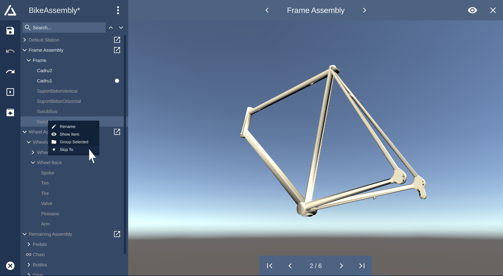

Assembly Line Visualization
Station View

The StationView allows to fully assemble and disassemble the 3D model in realtime.
It allows you to visualize and understand your built assembly line through the help
of the 3D preview. You can use the default mouse navigation to view the 3D model.
The StationView allows you to assemble all parts which are part of a specific assembly station.
To open the StationView for a specific assembly station, simply click on the box-pointer-icon
of the corresponding station in the list.
Use the skip-arrows on the bottom of the screen to incrementally assemble or disassemble all components.
The dot-icon and the color highlighting in the hierarchical list indicates which components have already
been assembled into the final model.
Alternatively you can right-click on a list item and select "Skip To" to jump to the selected component.
To switch the currently visible station, simply click on the navigation arrows on the top of the screen.
The name of the currently visible station is displayed on the top of the screen.
By default, all components which have been assembled in previous stations, are hidden to ensure clarity.
You can enable visibility of components from preceding stations by clicking the eye-button in the upper
right
corner of the screen.
Cinema Mode
The CinemaMode offers a movie-like experience to visualize the assembly process and to train assembly
personnel.
This mode works similar to the StationView but is is not indented to apply changes to the assembly line but
to solely
playback the entire assembly process for employee training.
To open the CinemaMode, simply click on the box-triangle icon on the sidebar. The CinemaMode screen will
appear and start with
the very first assembly station. To start playback, click the triangle button. To stop playback, click on
the playback button again.
You can skip to the previous or next component with the skip buttons. The assembly speed/delay can be
modified with the speed slider right next
to the playback control buttons. Move the slider left to the center to disassemble the model, move the
slider to the right of the slider center to
assemble the vehicle.
Alternatively you can click and drag around the dot indicator which is placed on the progress bar, which is
located above the playback controls to go one step back
or forth. Each section of the progress bar represents one assembly station. The dot indicator shows the
assembly progress inside the current station. To show the
name of the assembly station and the amount of components, simply hover the mouse above the desired progress
bar section.